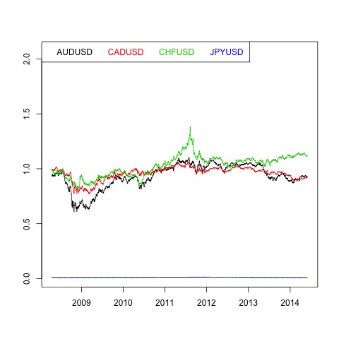
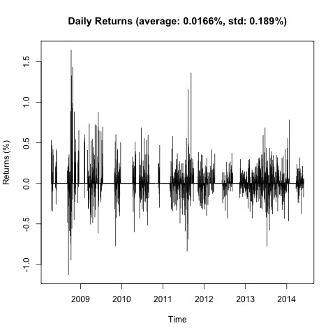
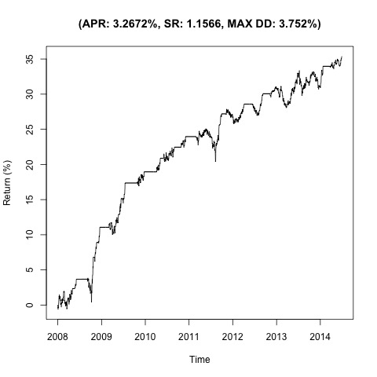
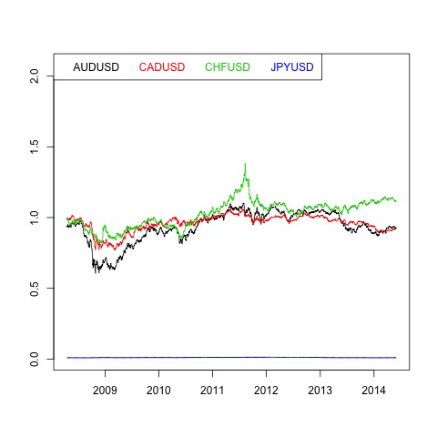
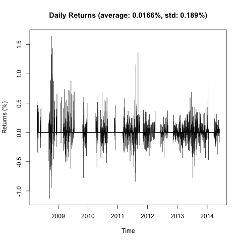
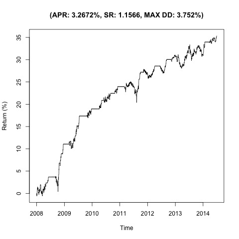

Johansen-Procedure 1.76 7.52 9.24 12.97 5.91 17.85 19.96 24.6 21.55 32 34.91 41.07 50.15 49.65 53.12 60.16 1 1 1 1 1 -1.41 1.35 -1.65 -19.79 -3.08 -0.38 -1 2.32 9.58 0.95 -0.97 -100.31 -28.39 -1352.93 -88.07 0.82 -0.07 -1.43 22.54 2.39
Augmented Dickey-Fuller Test p-value 0.01

 




